scroll down
Designing a number of hero module templates will give our Creative team the most flexibiilty with hero imagery.
With a responsive site, we'll need a different art direction for portrait screens. This means we'll need to cut images for portrait and landscape.
Creative could provide us with two versions of the hero at the specified portrait and landscape dimensions. We would use an automatic server side process to cut up the images to our desired image sizes.
More testing and fine tuning of ideal image ratios
Determine whether it's best to use 100% or 95% height for hero imagery. 95% height gives users a hint that there is additional content below. 100% height feels more spacious and premium.